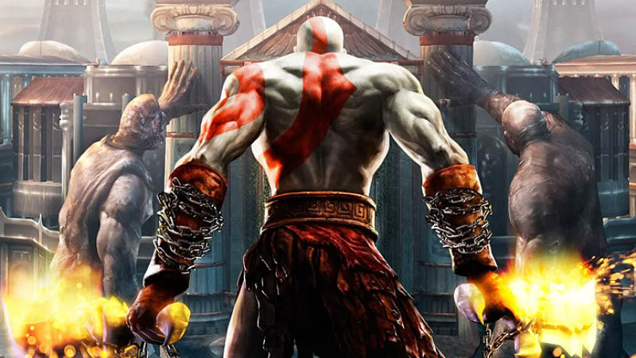

God of War (literalmente en español Dios de la Guerra) es una serie de videojuegos en 3ra persona creada por SCE Santa Monica Studio y distribuida por Sony Computer Entertainment. Se basa en las aventuras de un semidiós espartano, Kratos , quien se enfrenta a diversos personajes de la mitología griega y nórdica, tanto héroes (Heracles, Teseo, Perseo, etc.); especies mitológicas (gorgonas, arpías, o minotauros); dioses griegos (Ares, Poseidón, Zeus, entre otros), titanes (como Cronos) y dioses primordiales (como Gaia). Aunque el guerrero espartano acostumbra enemistad con la mayoría de los dioses, recibe ayuda de muchos de ellos en algún momento de cada entrega, en especial de Atenea. Los juegos están disponibles para las consolas PlayStation 2, PlayStation 3, PlayStation 4, PlayStation Portable, PlayStation Vita y también para teléfonos móviles. Se han realizado remasterizaciones de los primeros juegos para jugarse en consolas modernas, por lo cual hasta el día de hoy, seis de los ocho títulos están disponibles para PS3, a excepción de God of War: Betrayal y God of War de 2018. El día 11 de noviembre de 2020 se informo que la saga había superado los 51 millones de copias totales, situándola como una de las 3 sagas más importantes de la marca de Sony Interactive Entertainment, junto a Uncharted y Gran Turismo